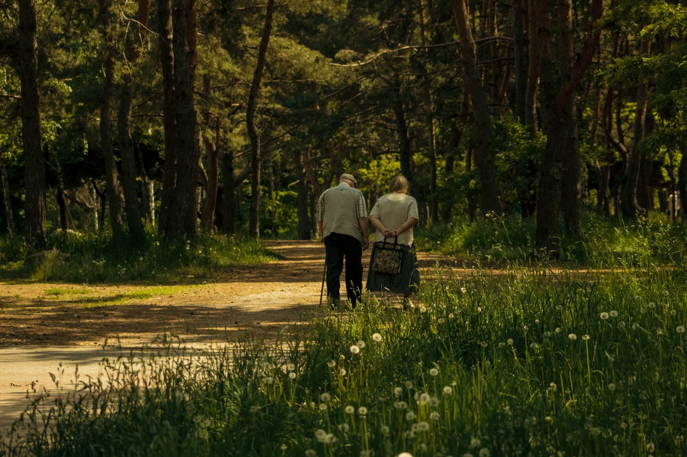
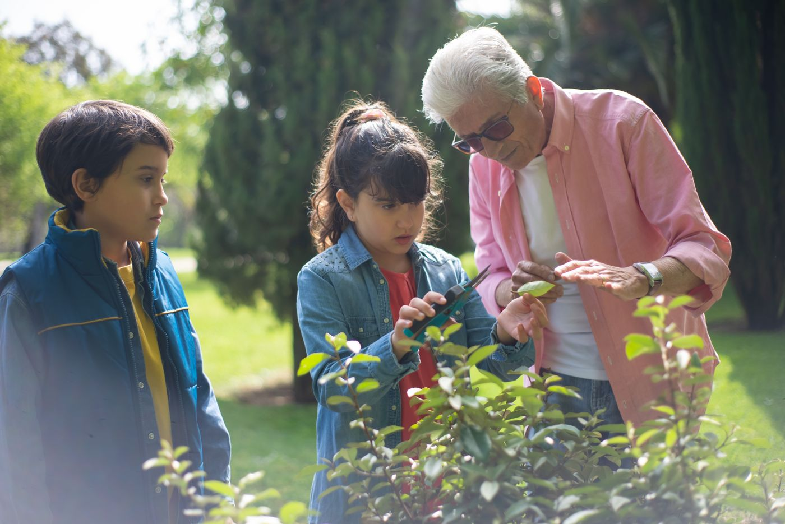
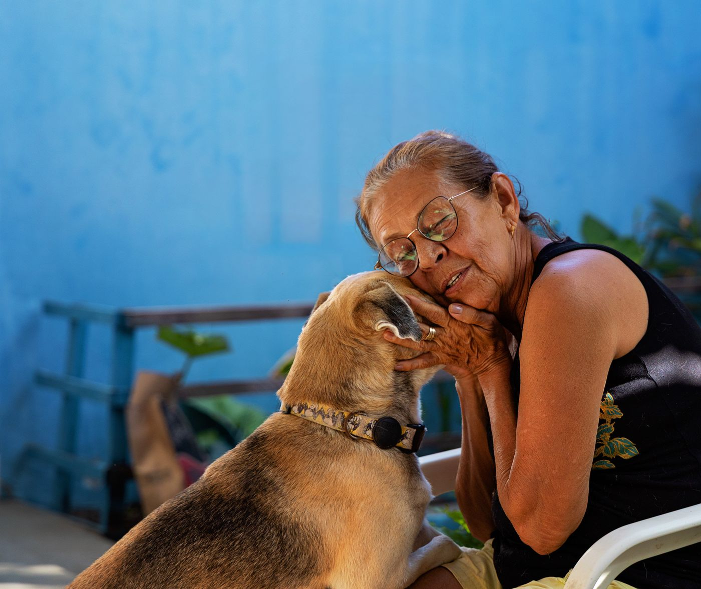
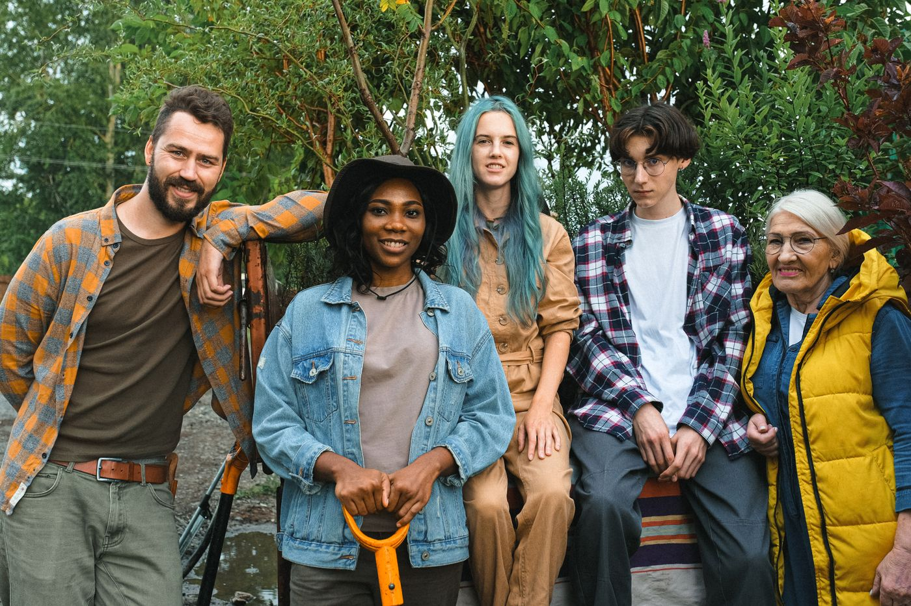

55~65세 장년층의 경험과 역량을 지역사회 자산으로 전환합니다.
폐교와 유휴지를 활용한 세대통합형 자연돌봄공동체를 함께 만들어 갑니다.
자연돌봄공동체는 노인·아동·반려동물·자연이 서로를 돌보는 순환 생태계입니다. 수혜자와 제공자의 경계가 없는, 모두가 기여하는 공동체를 지향합니다.

장기요양보험 연계, 돌봄코인 시스템으로 존엄한 노년을 공동체 안에서 완성합니다.

그룹홈 운영으로 최대 6명의 아이들이 자연 속에서 장년층의 지혜와 함께 성장합니다.

유기견 훈련·사회화·입양 센터 운영으로 사람과 동물이 함께 치유받는 공간을 만듭니다.

스마트팜·산림치유 프로그램으로 먹거리와 에너지를 자립하고, 숲이 모두를 치유합니다.
노인·아이·청년이 각자의 역할로 하루를 채우고, 저녁엔 함께 모입니다.
설립을 함께 준비하는 조합원들의 이야기입니다.
30년 금융업을 마치고 '이제 뭘 하지?' 막막했는데, 이 공동체를 만나고 나서야 진짜 은퇴 후 삶이 그려졌습니다. 내 경험이 쓸모 있는 곳에서 살고 싶었거든요.
폐교 리모델링 공사를 20년 해왔는데, 이걸 내가 사는 곳에 직접 짓는다는 게 얼마나 설레는 일인지. 손으로 만든 집에서 직접 산다는 것, 그게 제 꿈이었습니다.
유기견 훈련을 15년 해왔어요. 안락사 직전 개들이 공동체 안에서 치유견으로 거듭나고, 어르신들의 외로움을 달래주는 모습을 상상하면 가슴이 벅찹니다.
나도 조합원이 되고 싶으신가요? 설명회에 참여하시면 자세히 안내해 드립니다.
조합원 참여하기"청년도 아니고 노인도 아닌, 지원 대상도 활용 대상도 아닌 정책 사각지대.
그런데 이들은 30~40년의 경험과 기술, 책임감을 가진 엄청난 사회적 자산입니다."
55~65세 장년층을 수혜자가 아닌 기여자로 재정의합니다. 인구소멸 위기에 처한 지역에 활력을 불어넣고, 폐교·유휴지를 세대통합 돌봄 공간으로 전환합니다.
기존의 "퇴직 → 하강" 경로를 "공동체 참여 → 상승"으로 바꿉니다. 스스로 노후 복지를 적립하는 자립형 순환 모델입니다.
출퇴근 또는 상주 형태로 참여하며 건축·목수·간호·교육 등 30~40년 경험을 공동체 자산으로 활용합니다. 출자금이 자동으로 향후 입주 보증금으로 전환됩니다.
독립 주거동에 입주하여 자연 속에서 생활합니다. 적립한 출자금·코인으로 입주 보증금을 충당하며, 하루 3시간의 유급 활동으로 보람과 수입을 유지합니다.
외부 요양원이 아닌, 익숙한 사람들 곁에서 돌봄을 받습니다. 누적한 돌봄코인으로 요양비를 충당하며, 장기요양보험과 연계하여 사망 시까지 공동체 안에서 생활합니다.
스마트팜·태양광·반려동물센터·가구공방·산림치유·친환경건축 등 6개 사업이 유기적으로 연결되어 재정 자립과 돌봄 서비스를 동시에 달성합니다.
잎채소·토마토·허브 등 연중 생산. 내부 식재료를 자급하고 외부에 납품하며, 청년 창업가가 운영하는 사회적기업입니다.
청년 사회적기업태양광 발전으로 전기 에너지를 완전 자립하고, 잉여 전력을 한전에 판매하여 공동체 운영을 안정적으로 뒷받침합니다.
에너지 자립유기견 훈련·사회화·입양 전문 센터. 개 훈련사 조합원이 운영하며, 치유 반려 프로그램으로 노인·아동 정서 치유에 기여합니다.
사회적기업목수 조합원이 운영하는 가구 제작 공방. 장애 청년 직업 훈련 공간이자 공동체 내 필요한 가구·시설을 직접 제작합니다.
장애인 직업훈련인접 국·군 산림자원을 활용한 산림치유 프로그램 운영. 도시민 힐링 캠프, 아동 생태 체험, 수목장 예정지 조성으로 탄소크레딧을 창출합니다.
치유 프로그램건축 조합원이 직접 이끄는 폐교 리모델링 전문 팀. 배리어프리 설계, 패시브 하우스 기준 적용으로 에너지 효율을 극대화합니다.
사회적기업